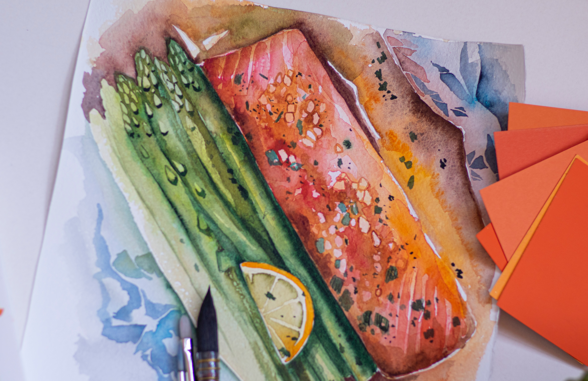

Odin Recipes
Salmon Traybake

A simple salmon traybake that's really easy to throw together, using soy sauce, chilli and lime. Feel free to change up the vegetables.
Each serving provides 553kcal, 45g protein, 11.5g carbohydrates (of which 10g sugars), 35g fat (of which 6g saturates), 6g fibre and 2.3g salt.
Ingredients
For the salmon traybake
- ½ lime, juice only
- 1 tbsp soy sauce (gluten-free if required)
- ½ tsp caster sugar
- 2 x 200g/7oz salmon fillets
- 100g/3½oz Tenderstem broccoli, trimmed
- 100g/3½oz green beans, halved
- 1 small red pepper, sliced
For the dressing
- 1 small garlic clove, grated
- 1cm/½in piece fresh root ginger, peeled and grated
- 2 spring onions, white part finely chopped, green part thinly sliced
- 1 red finger chilli, very finely chopped
- ½ lime, juice only
- 1 tbsp soy sauce (gluten-free if required)
- 2 tsp olive oil
- 1 tsp sesame oil (optional)
- ½ tsp caster sugar
Method
- Preheat the oven to 230C/210C Fan/Gas 8, or to its highest setting.
- In a shallow bowl mix the lime juice, soy sauce and sugar together. Stir with until the sugar dissolves. Place the salmon fillets into the bowl and coat with the mixture. Leave to stand, skin side up, for 10 minutes.
- Meanwhile, lightly grease a roasting tin with oil. Put the broccoli and green beans into a bowl and cover with boiling water. Leave to stand for 5 minutes, then drain.
- Put the salmon fillets, skin side down at one end of the roasting tin. Tip the broccoli, beans and peppers into the other end of the roasting tin. Top with the red peppers and pour over the soy sauce mixture. Toss the vegetables to coat in the sauce. Loosely cover the vegetables with kitchen foil, leaving the salmon exposed. Roast for 12 minutes.
- Meanwhile, to make the dressing, mix the garlic, ginger, white part of the spring onions, chilli, lime juice, soy sauce, olive oil, sesame oil, if using, and sugar together in a small jug.
- Spoon the dressing over the vegetables, sprinkle the green parts of the spring onion on top and serve.
All credit for recipes go to BBC Food